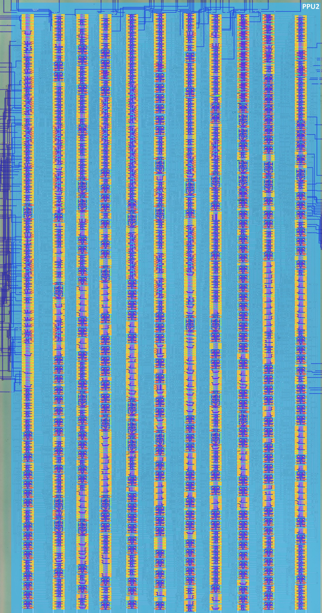
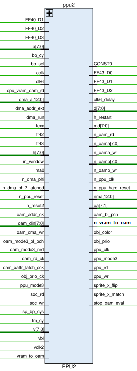
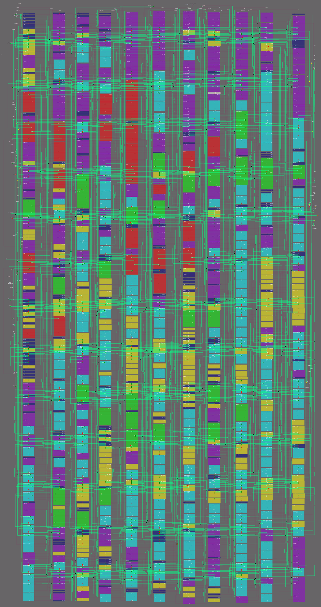

PPU2
The netlist (
HDL/soc/ppu2.v) has been annotated: the design is split into functional blocks and each block is described below. The signal table was corrected based on the netlist (several rows of the previous table were swapped: ff42 is the SCY ($FF42) access indicator and ff43 is the SCX ($FF43) one). Block descriptions were cross-checked against @msinger's DMG-CPU B schematics (dmg-schematics) and are being confirmed by the PPU testbench (HDL/soc/icarus/ppu).

Role in the SoC
PPU2 is the "object / OAM" half of the PPU. The two PPU blocks are split as follows (see also PPU1):
- PPU1: the BG/WIN part of the pipeline, the pixel serializers, the palettes and the pixel mux, the LCD driver interface, the H/V counters, the register decode and most of the PPU registers.
- PPU2 (this page): the OAM side: PPU2 is the only master of the OAM RAM block (in
HDL/soc/dmgcpu.vthe netsoa,n_oam_rd,n_oama_wr,n_oamb_wr,n_oama,n_oamb,oam_bl_pchrun exclusively betweenPPU2andOAM). The CPU never touches OAM directly — PPU2 performs every CPU OAM access on its behalf.
The netlist shows the following split of duties:
- The CPU-visible scroll registers SCY ($FF42) and SCX ($FF43) physically live in PPU2 (two 8-bit
latchr_compbanks). PPU1 receives only the low three SCX bits back asFF43_D0..2for its SCX fine-scroll counter. The register access indicatorsff42/ff43are produced by PPU1's decoder and consumed here. - PPU2 computes the scroll-adjusted line/column arithmetic
(V + SCY)and(H + SCX)with two 8-bit ripple adders and drives the shared VRAM-address busnmawith the map row/column (and the vertical fine offset) during the BG tile-map / tile-data fetch windows. - PPU2 contains the whole mode-2 OAM scan engine (scan counter, capture latches, port A/B control) and the 10-slot sprite store that keeps, per selected sprite of the current line: an 8-bit field (the port-A byte), a 6-bit field (the registered OAM scan address — "which OAM entry"), and a 4-bit field used by the X-position logic.
- PPU2 generates the PPU clocks (
ppu_clk=cclk,n_ppu_clk), the PPU hard reset (n_ppu_hard_reset=!n_reset2), theppu_rd/ppu_wrstrobes consumed by PPU1 and MMIO (they simply re-drivesoc_rd/soc_wr), plush_restart,ppu_mode2,stop_oam_evaland the per-object outputsobj_color,obj_prio,sprite_x_flip,sprite_x_matchconsumed by PPU1's sprite pixel path. - PPU2 arbitrates the OAM port data among three writers (the CPU data bus
d, the VRAM→OAM DMAmdbus, and the Arbiter'soam_din), and routes OAM read data back to the CPU ond.
The netlist is a flat gate-level Verilog: 973 cells, 153 assign statements, 67 ports (the only hierarchical cell is the const cell g527 producing w69 = 0 and w149 = 1). The cell inventory:
| Cell type | Count | Cell type | Count | Cell type | Count |
|---|---|---|---|---|---|
| notif0 | 249 | dffr | 26 | nor | 11 |
| not | 169 | fa | 22 | nand4 | 10 |
| latchnq_comp | 116 | nor4 | 20 | dffrnq_comp | 6 |
| latchr_comp | 96 | latch | 16 | and3 | 4 |
| xor | 84 | and | 16 | not4 | 3 |
| not2 | 43 | bufif0 | 16 | or3 | 2 |
| or | 36 | nand3 | 12 | aon22 / ha | 2 |
| nand | 2 | nand5 | 2 | aon / oai / oan | 1 each |
Bus conventions
PPU2 uses the same precharged, inverse-hold buses as PPU1 (d, md, nma, n_oama, n_oamb, oa): drivers are inverting tristates (notif0) that pull the wire to the inverse of the data while enabled; otherwise the wire holds its precharged value. bufif0 (non-inverting) is used only for the CPU OAM read-back path. Gate formulas below are the literal Boolean on the named nets.
Signals
Boundary view
This table lists every PPU2 port, including the PPU1↔PPU2 handshake nets. The whole-PPU external interface (PPU1+PPU2 vs ClkGen / CPU / MMIO / Arbiter / OAM / pads, internal PPU1↔PPU2 nets excluded) is on the PPU SoC boundary page.

| Signal Name | Direction | From / Where To | Description |
|---|---|---|---|
| FF40_D1 | Input | From PPU1 | LCDC register ($FF40) bit 1 — OBJ enable (gates the sprite-compare logic) |
| FF40_D2 | Input | From PPU1 | LCDC register ($FF40) bit 2 — OBJ size (8×8 / 8×16) |
| FF40_D3 | Input | From PPU1 | LCDC register ($FF40) bit 3 — BG tile map select |
| [7:0] a | Input | From Core | CPU address bus. Used for CPU OAM accesses (address mux group w48) |
| bp_cy | Input | From PPU1 | Buffer page cycle |
| bp_sel | Input | From PPU1 | Buffer page select |
| cclk | Input | From ClkGen | Input clock complement — this is the PPU dot clock (ppu_clk = cclk) |
| clk6 | Input | From ClkGen | Clock 6 (Aka INC_CLK_P); in PPU2 only re-buffered as clk6_delay |
| cpu_vram_oam_rd | Input | From MMIO | CPU VRAM/OAM read strobe (selects the returned OAM port byte) |
| [12:0] dma_a | Input | From MMIO | DMA address bus (OAM destination during VRAM→OAM DMA) |
| dma_addr_ext | Input | From MMIO | DMA address external memory — selects the oam_din write-data group |
| dma_run | Input | From MMIO | DMA run control (gates mode 2, the oa mux and the OAM write decode) |
| fexx | Input | From PPU1 | FExx register area indicator (VRAM/OAM) |
| ff42 | Input | From PPU1 | SCY ($FF42) access indicator — gates the SCY register write/read |
| ff43 | Input | From PPU1 | SCX ($FF43) access indicator — gates the SCX register write/read |
| [7:0] h | Input | From PPU1 | H counter (LX) value — operand of the H+SCX adder and of the sprite compare |
| in_window | Input | From PPU1 | In-window indicator (disables the scroll adders' nma drive on window lines) |
| ma0 | Input | From PPU1 | VRAM address bit 0 (MA0) — mode-3 nma drive |
| n_dma_phi | Input | From MMIO | DMA clock (inverted) |
| n_dma_phi2_latched | Input | From PPU1 | Latched inverted DMA clock 2 (OAM write-data mux select) |
| n_ppu_reset | Input | From PPU1 | PPU soft reset (active low; LCDC.7-gated in PPU1) |
| n_reset2 | Input | From ClkGen | Global reset (active low) — source of n_ppu_hard_reset |
| oam_addr_ck | Input | From PPU1 | OAM address clock (scan state machine, scan-address register) |
| [7:0] oam_din | Input | From Arb | OAM data input bus (third write-data source, DMA-from-external cases) |
| oam_dma_wr | Input | From MMIO | OAM DMA write strobe |
| oam_mode3_bl_pch | Input | From PPU1 | OAM bitline precharge during MODE3 |
| oam_mode3_nrd | Input | From PPU1 | OAM read during MODE3 (active low) |
| oam_rd_ck | Input | From PPU1 | OAM read clock (slot-enable window, capture) |
| oam_xattr_latch_cck | Input | From PPU1 | OAM X-attribute latch clock (precharge logic) |
| obj_prio_ck | Input | From PPU1 | Object priority clock — clocks the ten per-slot in-use dffr |
| ppu_mode3 | Input | From PPU1 | PPU Mode 3 (pixel transfer) indicator |
| soc_rd / soc_wr | Input | From MMIO | SoC read/write strobes (re-driven as ppu_rd/ppu_wr) |
| sp_bp_cys | Input | From PPU1 | Sprite buffer page cycle |
| tm_cy | Input | From PPU1 | Tile map cycle |
| [7:0] v | Input | From PPU1 | V counter (LY) value — operand of the V+SCY adder and of the port-B Y-test |
| vbl | Input | From PPU1 | VBLANK indicator (mode-2 start is inhibited in VBlank) |
| vclk2 | Input | From PPU1 | Line clock — starts the mode-2 OAM scan |
| vram_to_oam | Input | From MMIO | VRAM to OAM transfer enable (DMA) |
| CONST0 | Bidir | Global | Constant 0 signal (local source g527.q0) |
| FF43_D0 / FF43_D1 / FF43_D2 | Output | To PPU1 | SCX register bits 0..2 (SCX fine scroll for PPU1) |
| clk6_delay | Output | To MMIO | Delayed clock 6 (= clk6) |
| [7:0] d | Bidir | Global | Internal data bus (SCY/SCX writes, CPU OAM writes; OAM read return) |
| h_restart | Output | To PPU1 | H counter restart (end-of-line; from the mode-2 start re-timed) |
| [7:0] md | Bidir | Global | Internal video memory data bus (VRAM) — VRAM→OAM DMA source |
| n_oam_rd | Output | To OAM | OAM read enable (active low) — asserted in mode 2, mode 3 and CPU reads |
| [7:0] n_oama | Bidir | To/From OAM | OAM port A data bus (inverse hold) — attribute byte capture |
| n_oama_wr | Output | To OAM | OAM port A write enable (active low) |
| [7:0] n_oamb | Bidir | To/From OAM | OAM port B data bus (inverse hold) — Y byte capture, CPU read-back port |
| n_oamb_wr | Output | To OAM | OAM port B write enable (active low) |
| n_ppu_clk | Output | To PPU1 | PPU clock (inverted) |
| n_ppu_hard_reset | Output | To MMIO, Arb, PPU1 | PPU hard reset (= !n_reset2) |
| [12:0] nma | Bidir | Global | Internal video memory address bus between PPUs (inverse hold) — PPU2 drives the scroll adder results here |
| n_vram_to_oam | Output | To Arb | VRAM to OAM transfer (= !vram_to_oam) |
| [7:1] oa | Output | To OAM | OAM address (bits 7:1; bit 0 is not used; four sources: CPU/DMA/scan/store) |
| oam_bl_pch | Output | To OAM | OAM bitline precharge (also the attribute-latch enable window) |
| obj_color | Output | To PPU1 | Object color (captured OAM attr bit 4) |
| obj_prio | Output | To PPU1 | Object priority (captured OAM attr bit 7) |
| ppu_clk | Output | To MMIO, PPU1 | PPU clock (= cclk) |
| ppu_mode2 | Output | To PPU1 | PPU Mode 2 (OAM scan) indicator |
| ppu_rd / ppu_wr | Output | To MMIO, PPU1 | PPU read/write strobes (= soc_rd/soc_wr) |
| sprite_x_flip | Output | To PPU1 | Sprite X flip (captured OAM attr bit 5) |
| sprite_x_match | Output | To PPU1 | Sprite X match (one of the ten per-slot compares matched) |
| stop_oam_eval | Output | To PPU1 | Stop OAM evaluation (scan finished) |
Netlist

Annotated Design

Functional blocks
The netlist is organized into the following functional blocks (instance numbers refer to HDL/soc/ppu2.v):
| # | Block | Key instances |
|---|---|---|
| 1 | SCY/SCX registers + access decode | g657–g704/g726 (SCY), g639–g730 (SCX) |
| 2 | Scroll adders (V+SCY, H+SCX) + nma drive | g971/ha, g590–g594; g973/ha, g587–g589/g605–g608; tristates g304–g307/g317–g344/g480–g484 |
| 3 | Port-B adder (OAM Y test) | fa g595–g602, capture g204–g250 |
| 4 | Mode-2 OAM scan engine | g954 (mode-2 latch), g938–g943 (scan-address register), g621/g625/g619/g614/g627/g626 (scan counter), g609/g612/g613/g630–g632, h_restart g955 |
| 5 | OAM port data/address muxes (CPU, DMA, scan, sprite store) | port data g296–g434, strobes g556/g557/g887/g888/g946, oa mux g352–g475, CPU read return g749–g764 |
| 6 | Sprite-store capture stage (16 port latches + attribute stage) | g733–g748 (en w165), g203–g267 (en w314) |
| 7 | 10-slot sprite store (3×10 banks) | 8-bit latchr rows g635–g730 etc., 6-bit rows g163–g278, 4-bit rows g163–g278, slot walker g610/g633/g629/g634, in-use flags g611–g628 |
| 8 | Sprite compare (mode-3 match) + read-back muxes | xor rows g770–g847, nor4 g899–g918, nand3 g920–g927, NAND5 g961/g962, or g875 |
| 9 | Clock/reset generation | g558/g937/g535 (clocks), g136/g548 (hard reset), g947/g953 (ppu_rd/ppu_wr), g8–g10/g149/g151/g930 (reset fan-out) |
| 10 | DMA interface / CPU-OAM decode | g574/g946/g950/g949/g944/g945, g139/g1/g529–g531/g533/g546–g547/g549/g568/g951/g952 |
1. SCY / SCX registers
PPU2 does not decode a[3:0] for the scroll registers — PPU1's decoder produces the access indicators ff42/ff43 (PPU1 g789/g796), and PPU2 simply gates them with the SoC strobes:
| Register | Write enable | Read enable | Latches | Notes |
|---|---|---|---|---|
| SCY $FF42 | w10 = soc_wr & ff42 |
w144 = ppu_rd & ff42 |
g700,g699,g702,g726,g701,g703,g704,g657 (8× latchr_comp, reset n_ppu_hard_reset) |
all 8 bits → V+SCY adder (block 2); not exported |
| SCX $FF43 | w159 = soc_wr & ff43 |
w204 = ppu_rd & ff43 |
g730,g640,g641,g729,g658,g639,g728,g727 | bits 0..2 → FF43_D0..2 to PPU1 (w422/w156/w400); all 8 bits → H+SCX adder |
Read-back is done by notif0 tristates enabled by !w144/!w203 fed from the latch nqs: e.g. for d0 g424 (SCY) and g348 (SCX), so the bus voltage equals the register value (inverse-hold convention).
2. Scroll adders and the nma (VRAM-address) drive
Two 8-bit ripple adders compute the scroll-adjusted position:
- V + SCY (
g971half-adder +g590–g594,g603,g604): operands = V-counter bits + SCY latch q bits. Sum bitsw808..w182. - H + SCX (
g973half-adder +g587–g589,g605–g608): operands = H-counter bits + SCX latch q bits. Sum bits 0–2 are discarded (sofg973/g608/g589unconnected — only carries propagate): the SCX fine scroll is handled in PPU1's 3-bit fine counter fed withFF43_D0..2. Sum bits 3–7 continue into the nma drive.
PPU2 then drives the shared VRAM-address bus nma (via notif0, inverse-hold) on non-window lines:
| Driven nma bits | Value | Enable (n_ena) |
Phase |
|---|---|---|---|
| nma[1..3] | (V+SCY) sum bits 0..2 — vertical fine, ×2 | w153 = !(!in_window & bp_cy) |
tile-data fetch (g344/g484/g482) |
| nma[5..9] | (V+SCY) sum bits 3..7 — tile-map row, ×32 | w183 = !(tm_cy & !in_window) |
tile-map fetch (g481/g319/g317/g318/g480) |
| nma[0..4] | (H+SCX) sum bits 3..7 — tile-map column | w183 |
tile-map fetch (g304–g307/g320) |
So the BG tile-map address is assembled by PPU2 from (V+SCY)>>3 (row, ×32, nma[9:5]) and (H+SCX)>>3 (column, nma[4:0]) during tm_cy, and the tile-data fine vertical offset (V+SCY)&7 (×2, nma[3:1]) during bp_cy. PPU1's own nma drivers (its TM/TD counters) complete the addresses (tile-map base select, tile index, byte parity). The exact per-cycle alignment of the two drivers is confirmed by the joint testbench (waves).
3. Port-B adder (the OAM "Y test")
The eight latchnq_comp g204–g250 (enable w120) capture the OAM port B byte (through the port latches g733–g748). Their nq outputs feed the full-adder row g595–g602 whose other operand is the inverted V counter — i.e. this adder tests the sprite Y position against the current line (Y − V-type range test). The results (w68/w543/w438/w479/w473/w476/w485/w482) drive the entry-selection logic and read-back muxes.
Interpretation: during the mode-2 scan port B carries the sprite Y byte and the adder performs the per-entry Y-range test (16/32 rows depending on FF40_D2 OBJ size); only entries in range are eligible for the store. Port A carries the attribute byte (bits 7/5/4 → obj_prio/sprite_x_flip/obj_color), which is fixed by wiring. (The byte↔port mapping depends on the OAM macro; see Open questions.)
4. Mode-2 OAM scan engine
ppu_mode2 = w100 & !dma_run (g576/g139), where w100 is the q of the nor_latch g954:
- set by
w98(dffrg612, clkoam_addr_ck,d = vclk2 & !vbl) — the OAM-address-clock edge that follows PPU1's line clock, outside VBlank; - reset by
!n_ppu_reset | stop_oam_eval.
Scan address. The live address comes from the ripple counter g621(g625(g619(g614(g627(g626)) (dffr, base clock w647, reset w650 = n_ppu_reset & !h_restart); during mode 2 its outputs are muxed onto oa (group w518 = !ppu_mode2, oa[1] = 0). Six dffrnq_comp g938–g943 (clk oam_addr_ck) register the current oa value; their nq outputs are the registered OAM scan address that mode 3 reuses (block 7). stop_oam_eval (= !w860) fires from a small state machine on g631/g632 when the scan-address counter finishes.
h_restart (= !w713) is the mode-2 start re-timed on the opposite oam_addr_ck phase (g609, w99): it ends PPU1's H counter and clears PPU2's own line state (w410 = !h_restart resets the slot walker).
OAM read/precharge. The OAM read strobe n_oam_rd and the port-latch capture enable (w165) are asserted during mode-2 read clocks (ppu_mode2 & oam_rd_ck), during mode-3 OAM re-reads (oam_mode3_nrd) and during CPU FExx reads (fexx & ppu_rd & !clk6). oam_bl_pch (w58) combines the DMA/fexx precharge disable, PPU1's mode-3 precharge and the mode-2 X-attribute latch clock; note w314 (the attribute-stage latch enable) equals oam_bl_pch — the attribute stage captures exactly between OAM drive phases ("X-attribute latch" window).
5. OAM port and address muxes
OAM write data (n_oama/n_oamb) has three mutually exclusive sources:
Enable (n_ena) |
Data | Use |
|---|---|---|
w62 = !vram_to_oam |
md bus |
VRAM→OAM DMA |
w123 = !w889 |
d bus |
CPU OAM writes |
w140 = !dma_addr_ext |
oam_din (Arbiter echo) |
DMA sourced from external memory |
Write strobes: n_oama_wr = !(w125 & w508), n_oamb_wr = !(w125 & !w508) with w125 = (fexx & w888 & ppu_wr) | oam_dma_wr and port select w508 = !dma_a[0] (while dma_run), else constant. So VRAM→OAM DMA alternates the ports with the source-address parity, and CPU OAM writes always target one fixed port (the CPU-facing port B).
oa address mux — four sources per bit (buffered by g68–g73/g526):
Enable (n_ena) |
Address source | When |
|---|---|---|
w48 = ppu_mode2|ppu_mode3|dma_run |
CPU a[7:1] |
CPU OAM access |
w403 = !dma_run |
dma_a[7:1] |
DMA destination |
w518 = !ppu_mode2 |
scan counter + oa[1]=0 |
mode-2 scan |
w444 / w475 |
stored sprite fields | mode-3 sprite re-fetch |
CPU OAM read return: the port latches hold the last OAM word; bufif0 banks drive the selected port byte onto d (select from cpu_vram_oam_rd + port parity). So CPU OAM reads also go through PPU2.
6. Sprite-store capture stage
Per OAM word access, 16 dmg_latch g733–g748 (enable w165 = OAM read active) capture the entire n_oama[7:0] + n_oamb[7:0] buses. Two follower stages select the interesting bytes:
g204–g250(enablew120): capture the port B byte (Y) — feeds the port-B adder (block 3).g203–g267(enablew314=oam_bl_pch): capture the port A byte. Threenqoutputs are module outputs:
| Output | Latch | Captured port-A bit |
|---|---|---|
obj_color |
g203 (d from g748) | attr bit 4 (colour/palette) |
obj_prio |
g263 (d from g734) | attr bit 7 (priority) |
sprite_x_flip |
g267 (d from g733) | attr bit 5 (X flip) |
The eight attribute bits are inverted (g7/g60/g65/g67/g78/g79/g150/g928) into the nets w413/w415/w431/w433/w294/w325/w590/w594 — the common data input of all ten 8-bit store banks.
7. The 10-slot sprite store
Each of the 10 slots = one 8-bit latchr_comp bank (reset by the slot's in-use flag, i.e. an unclaimed slot stays cleared) + one 6-bit latchnq_comp bank + one 4-bit latchnq_comp bank, all capturing from shared buses. The three banks of a slot share one master enable net (e.g. master w321 → 8-bit en w77, 6-bit en w247, 4-bit en w251):
| slot master | 8-bit bank en / instances | 6-bit bank en | 4-bit bank en |
|---|---|---|---|
| w292 | w40: g650–g652, g713–g717 |
w685: g268–g273 |
w288: g216,g217,g240,g241 |
| w321 | w77: g668,g669,g675,g676,g689,g690,g694,g695 |
w247: g208–g212,g249 |
w251: g185–g188 |
| w266 | w90: g647–g649,g653–g656,g712 |
w722: g175,g176,g274–g277 |
w328: g167–g170 |
| w297 | w296: g637,g638,g719–g721,g723–g725 |
w728: g179–g184 |
w715: g171–g174 |
| w349 | w414: g659–g663,g696–g698 |
w489: g260–g266 |
w736: g227–g230 |
| w666 | w437: g642–g646,g705–g707 |
w305: g196–g198,g253–g255 |
w866: g213–g215,g239 |
| w215 | w512: g670–g674,g691–g693 |
w276: g222,g242,g244,g245,g247,g248 |
w825: g178,g194,g256,g278 |
| w344 | w585: g664–g667,g681–g684 |
w283: g218–g221,g243,g246 |
w341: g177,g257,g258,g259 |
| w603 | w600: g677–g680,g685–g688 |
w664: g199–g202,g251,g252 |
w65: g223–g226 |
| w226 | w747: g635,g636,g708–g711,g718,g722 |
w656: g189–g193,g195 |
w578: g163–g166 |
Slot enable decode. A bank captures only while the slot master is low, i.e. on OAM read-clock pulses when the mode-2 state is current and the store window is open (w852 = oam_rd_ck & w209 & w816, w223 = !w852). The per-slot selection decodes the four state bits of the per-line sprite-slot walker g610/g633/g629/g634 (ripple-clocked, reset !h_restart) — ten NAND4 g889–g898 with OR trees produce the ten slot terms.
Per-slot in-use flags. Ten dffr g611–g628 (clock obj_prio_ck, async reset w371) capture whether each slot is claimed; each flag, OR-ed, feeds the async reset of the slot's 8-bit bank: an unclaimed slot is held cleared, a claimed one can hold data.
Contents (per slot):
- the 8-bit field = the current port-A (attribute) byte captured during the scan;
- the 6-bit field = the registered OAM scan address (which OAM entry the sprite came from), placed on the shared bus
w213/w279/w284/w323/w347/w487bynotif0groups enabled in mode 3 (fromg938–g943nqs); - the 4-bit field (nets
w66/w257/w259/w310) = extra per-sprite data from the port-B arithmetic, used by the X-position logic.
The store behaves like a rotating array whose write/read schedule (which scan address lands in which slot, the 10-sprite limit) is confirmed by simulation.
8. Sprite compare (mode 3)
All q outputs of the 8-bit banks feed dmg_xor rows whose second operand is a reference byte derived from the H counter (e.g. slot 0: g770/g771/g828–g831/g840/g841 comparing stored bits against !h7..!h0). Per slot the XORs merge in two nibbles (nor4 pairs g899–g918) and a nand3 gated by w332 = FF40_D1(OBJ enable) & ppu_mode3 produces the per-slot byte-match flag (g920–g927, g969, g970).
sprite_x_match = w804 | w767 (g875), where the two NAND5 g961/g962 collect the ten per-slot flag terms (five each).
The flag terms also enable the read-back notif0 groups that place particular slots' stored data onto the shared 6/4-bit buses (and from there onto oa in mode 3 via the group w444, plus extra XORs g765/g825/g846/g847 comparing the 4-bit field against the captured n_oama[6]).
Interpretation: in mode 3 the ten stored fields are matched against the running LX value so the store is searched for the sprite starting at the current X; on a match the 6-bit OAM-address field is re-driven onto oa, the OAM is re-read (tile/attributes for PPU1's fetch), and the object pixel stream (obj_color/obj_prio/sprite_x_flip) is presented to PPU1. The exact semantics of the stored byte vs the LX reference are an open question (see below) — resolved by the sprite testbench.
9. Clock and reset generation
| Signal | Formula | Cells |
|---|---|---|
ppu_clk |
= cclk (double inversion g558 + not4 g937) |
g558, g937 |
n_ppu_clk |
= !ppu_clk |
g535 |
clk6_delay |
= clk6 (g137/g25); internal w453 = !clk6 used in the CPU-OAM-read gate |
g137, g25, g138 |
n_ppu_hard_reset |
= !n_reset2 |
g136, g548 |
ppu_rd / ppu_wr |
= soc_rd / = soc_wr (buffered) |
g947, g953 |
| reset fan-out | w570 = !n_ppu_reset; w650 = n_ppu_reset & !h_restart; w371 = !(h_restart | !n_ppu_reset); w410 = !h_restart |
g8–g10, g12, g149, g151, g930 |
Note: the PPU dot clock is the external complement clock cclk — PPU2 does not divide clk6 for the PPU (that division happens in PPU1's OAM-clock block, ppu1.md block 13, which feeds PPU2 the oam_addr_ck/oam_rd_ck/oam_xattr_latch_cck/obj_prio_ck pulses).
10. DMA / CPU-OAM access summary
- VRAM→OAM DMA (
vram_to_oam): data =md→ OAM ports; write strobes fromoam_dma_wr; destination =dma_a[7:1]; port parity =dma_a[0];n_vram_to_oamoutput to the Arbiter. - CPU OAM write: data =
d; strobefexx & !(dma_run|ppu_mode2|mode3-qualified) & ppu_wr; address =a[7:1]. - CPU OAM read: PPU2 asserts
n_oam_rdwith the CPU address, captures the OAM word and drives the selected port byte ontod. oam_din: a third write-data path (w140 = !dma_addr_ext) used when the Arbiter holds the DMA data (DMA from external memory sources).
Clock domains
| Domain | Source | Driven elements |
|---|---|---|
ppu_clk / n_ppu_clk |
cclk |
g630, g631 (stop-oam), OAM scan state |
oam_addr_ck |
PPU1 | scan FSM g612/g613/g632, scan-address register g938–g943, scan counter |
oam_rd_ck |
PPU1 | capture / slot-enable logic |
obj_prio_ck |
PPU1 | per-slot in-use dffr g611–g628 |
| OAM read pulses | PPU2 decode (n_oam_rd, capture w165) |
port latches g733–g748, store banks |
oam_bl_pch |
PPU2 (fexx/dma_phi + PPU1 mode-3 + mode-2 X-attr) | OAM block, attribute-stage enable w314 |
| Register writes | w10/w159 (soc_wr & ff42/43) |
SCY/SCX latches |
| Slot walker | ripple w834 |
g610/g633/g629/g634 (reset !h_restart) |
| Scan counter | ripple from w647 |
g621/g625/g619/g614/g627/g626 |
| nma drives | ppu_mode3/bp_cy/tm_cy/in_window |
tristate groups w153/w183/w170 |
Map
| Row | Cells |
|---|---|
| 1 | not, not2, not2, not2, not4, or3, not2, not, and, aon22, nor3, notif0, notif0, and, not, and, and, and, notif0, fa, not2, notif0, fa, notif0, notif0, notif0, and, notif0, notif0, notif0, notif0, not, notif0, not, dffr, notif0, notif0, and3, nand, nand, notif0, notif0, fa, notif0, notif0, and, not2, notif0, not2, not2, and, not2, and, not, and, not, and, ha, not2, not2, not2, or, not, not, not2, not2, not2, nor, not, not2, not2, not, or, notif0, notif0, not, notif0, not, notif0, not, notif0, notif0, latchnq_comp, notif0, notif0, latchnq_comp, not, notif0, latchnq_comp, latchnq_comp, latchnq_comp, latchnq_comp, not, notif0, notif0, latchnq_comp, latchnq_comp, latchnq_comp, latchnq_comp, notif0, notif0, latchnq_comp, latchnq_comp, latchnq_comp, latchnq_comp |
| 2 | not, notif0, notif0, notif0, notif0, not, nand3, notif0, not, notif0, latchr_comp, latchr_comp, not, not, notif0, notif0, notif0, notif0, notif0, notif0, fa, fa, not, and, fa, and, notif0, nor_latch, oan, latchnq_comp, nand3, not, notif0, notif0, notif0, xor, not, xor, notif0, not2, notif0, not, not, dffr, not, not, or3, xor, xor, fa, not, xor, xor, latchnq_comp, latchnq_comp, latchnq_comp, not, latchnq_comp, latchnq_comp, not, latchnq_comp, not, latchnq_comp, latchnq_comp, not, not, notif0, latchnq_comp, notif0, not, latchnq_comp, notif0, notif0, notif0, not, dffr, and, dffr, notif0, notif0, not, not, not, notif0, or, notif0, latchnq_comp, notif0, notif0, notif0, not, not, notif0, not |
| 3 | not, not2, notif0, not2, notif0, oai, notif0, latchr_comp, latchr_comp, notif0, notif0, notif0, latchr_comp, notif0, notif0, notif0, not4, notif0, latch, notif0, not, notif0, notif0, not2, notif0, notif0, notif0, dffr, dffr, not2, not2, and3, notif0, xor, latchnq_comp, latchnq_comp, notif0, notif0, latchnq_comp, latchnq_comp, nor4, not, xor, xor, xor, nor4, latchr_comp, latchr_comp, xor, nor4, not, latchr_comp, notif0, notif0, notif0, latchr_comp, dffr, not, notif0, latchnq_comp, notif0, latchnq_comp, latchnq_comp, latchnq_comp, notif0, latchnq_comp, latchnq_comp, notif0, nor4, xor, xor, not, or, not, not, dffr, not, not, not, or, nand4, or, or, nand4, latchnq_comp, notif0, or, latchnq_comp, nand4, notif0, or |
| 4 | not, not, notif0, notif0, not2, notif0, not2, notif0, latchr_comp, latchr_comp, bufif0, notif0, latchr_comp, fa, notif0, fa, notif0, notif0, notif0, notif0, latchnq_comp, notif0, latchnq_comp, latchnq_comp, latchnq_comp, notif0, latchnq_comp, not, not2, notif0, latchnq_comp, latchnq_comp, not, not, not, dffr, xor, xor, xor, not, nand3, xor, latchr_comp, nor4, xor, latchr_comp, latchr_comp, latchr_comp, latchr_comp, nand3, latchr_comp, not, latchr_comp, latchr_comp, dffr, not, not, or, not2, or, not2, not, xor, nor4, xor, nand3, xor, xor, xor, not, dffr, latchr_comp, latchr_comp, not, notif0, notif0, notif0, nand4, nand4, not, not, not, not, nand4, latchnq_comp, notif0, not, notif0, latchnq_comp |
| 5 | notif0, notif0, notif0, notif0, notif0, notif0, notif0, notif0, notif0, notif0, notif0, fa, fa, not, fa, fa, fa, notif0, notif0, latch, dffr, not, not, fa, notif0, fa, latchr_comp, latchr_comp, latchr_comp, latchr_comp, xor, xor, latchr_comp, xor, not, xor, nand3, xor, nor4, xor, xor, not, nor, or, nor, dffr, not, dffr, dffr, nand3, notif0, notif0, xor, latchr_comp, nor4, latchr_comp, latchr_comp, latchr_comp, latchr_comp, not, latchnq_comp, latchnq_comp, notif0, notif0, not, notif0, not, latchnq_comp, latchnq_comp, not, not, latchnq_comp |
| 6 | notif0, notif0, notif0, notif0, notif0, notif0, notif0, notif0, bufif0, latchr_comp, latchr_comp, latchr_comp, latchr_comp, latchr_comp, latchr_comp, notif0, notif0, notif0, not, dffr, and4, notif0, ha, notif0, dffr, notif0, not, notif0, notif0, notif0, not, not, fa, not, not, fa, not, notif0, notif0, latchr_comp, latchr_comp, latchr_comp, or, nand5, or, latchr_comp, nor4, latchr_comp, nand5, or, nor, latchr_comp, latchr_comp, or, not2, or, dffr, latchnq_comp, nor4, latchnq_comp, latchr_comp, xor, xor, xor, xor, latchr_comp, latchr_comp, latchr_comp, not, not, not2, not2, not, latchnq_comp, latchnq_comp, not, latchnq_comp, latchnq_comp, not, nand4, not, not, latchnq_comp |
| 7 | notif0, notif0, notif0, and3, notif0, not, notif0, latchr_comp, notif0, notif0, notif0, notif0, latchr_comp, notif0, notif0, notif0, notif0, notif0, notif0, not, not, notif0, not, notif0, fa, or, dffr, notif0, notif0, latchnq_comp, not, not, not, fa, notif0, fa, or, not, not2, not2, not2, not, or, not, aon22, or, not, or, dffr, nor, nor, nor, not, or, not, not, not, xor, nor, xor, or, xor, xor, nor, not, or, not2, nor, or, not, or, not, latchnq_comp, latchnq_comp, latchnq_comp, latchnq_comp, xor, xor, xor, latchr_comp, latchr_comp, xor, latchr_comp, not, latchr_comp, latchr_comp, or, not, not, latchnq_comp, latchnq_comp, latchnq_comp, latchnq_comp, latchnq_comp, not, notif0, nand4, nand4, notif0 |
| 8 | notif0, notif0, notif0, aon, not2, not, and3, notif0, notif0, notif0, notif0, not2, notif0, notif0, notif0, const, notif0, latch, latch, not2, notif0, notif0, fa, notif0, notif0, dffr, notif0, notif0, latchnq_comp, not, nand6, notif0, notif0, notif0, notif0, notif0, latchnq_comp, notif0, notif0, not, notif0, notif0, not, notif0, notif0, not, not, not, xor, dffr, latchr_comp, not, not, not, latchr_comp, latchr_comp, or, not, or, not, or, not, not, dffr, not, or, notif0, notif0, not, dffr, or, notif0, notif0, not, notif0, latchr_comp, not, not, latchr_comp, not, xor, xor, latchr_comp, latchr_comp, notif0, notif0, not, notif0, notif0, notif0, not, notif0, notif0, notif0, latchnq_comp, not, nand4, not, not, or |
| 9 | notif0, bufif0, bufif0, bufif0, bufif0, bufif0, bufif0, bufif0, bufif0, latch, dffrnq_comp, dffrnq_comp, latchnq_comp, notif0, not, dffrnq_comp, dffrnq_comp, latch, latchnq_comp, not, latchnq_comp, latchnq_comp, notif0, latchnq_comp, latchnq_comp, latchnq_comp, not, latchnq_comp, latchnq_comp, latchnq_comp, latchnq_comp, latchnq_comp, latchr_comp, latchr_comp, latchr_comp, latchr_comp, xor, latchr_comp, xor, xor, nor, or, latchr_comp, latchr_comp, dffr, latchr_comp, latchr_comp, not, nand3, xor, not2, xor, xor, latchr_comp, latchr_comp, xor, nor4, not, latchr_comp, latchr_comp, latchr_comp, latchnq_comp, latchnq_comp, latchnq_comp, latchnq_comp, not, or, latchnq_comp, latchnq_comp, notif0 |
| 10 | bufif0, bufif0, bufif0, and, and, bufif0, not, notif0, not, latch, latch, latch, latch, latch, latch, latchnq_comp, latchnq_comp, not, not, not, dffrnq_comp, dffr, not, not, latchnq_comp, not, not, latchnq_comp, latchnq_comp, not, notif0, not, notif0, notif0, latchnq_comp, xor, xor, nor4, nor4, nand3, xor, not, xor, xor, xor, nor4, xor, xor, notif0, nand3, nand3, notif0, nor4, xor, latchr_comp, latchr_comp, latchr_comp, latchr_comp, nor4, xor, latchr_comp, latchr_comp, nor4, latchr_comp, latchr_comp, latchr_comp, latchr_comp, nor4, nand3, xor, xor, latchr_comp, latchnq_comp, latchnq_comp, notif0, notif0, latchnq_comp, latchnq_comp, latchnq_comp, latchnq_comp, notif0, latchnq_comp, latchnq_comp |
| 11 | not, notif0, notif0, notif0, notif0, not4, not2, bufif0, notif0, bufif0, notif0, notif0, notif0, notif0, notif0, notif0, notif0, latch, latch, latch, not2, latch, not2, dffrnq_comp, notif0, not2, latchnq_comp, latchnq_comp, latchnq_comp, not, notif0, latchnq_comp, latchnq_comp, latchnq_comp, not, not, latchnq_comp, notif0, xor, xor, xor, xor, xor, xor, nor4, xor, xor, notif0, latchnq_comp, latchnq_comp, latchnq_comp, not, latchnq_comp, notif0, not, latchr_comp, latchr_comp, latchr_comp, latchr_comp, xor, xor, xor, xor, not, not, latchr_comp, xor, latchr_comp, xor, xor, xor, nor4, xor, xor, latchr_comp, xor, latchr_comp, notif0, notif0, notif0, notif0, notif0, latchnq_comp, notif0, notif0, notif0, notif0 |
OAM SRAM ground truth (@msinger's cell reference)
From the DMG-CPU cells reference ("SRAM", Variant A is used in HRAM and OAM):
-
The DMG-CPU B die has four SRAM instances: HRAM, Wave RAM and 2× OAM — i.e. OAM is physically two SRAM macros (matching the two PPU2 ports
n_oama/n_oamb). -
The macro is built from 6T cells with dynamic NMOS read/write: bit lines are precharged to 1 (
BL_PCH, active low) before every access; a read drives the data pad toD = ~bit(a stored 0 pulls the pad high), so the "inverse-hold" values seen onn_oama/n_oambare the real macro behaviour (~memin the testbench model is correct). -
Rows are selected by address bits A2 and up; A0/A1 select one of four byte columns inside a row. For OAM (40 entries × 4 bytes = 160 bytes) the natural mapping is: word line = OAM entry (40 rows), columns = the four bytes of the entry. The macro access granularity is therefore one byte (row + 2 column bits), while the testbench uses PPU2's 7-bit
oa[7:1]word interface (bit 0 unused) with two 8-bit data ports - the exact column/byte<->port encoding inside the 2×OAM macros still needs the schematic pages (the repo OAM module is an empty stub).
Testbench state of the sprite store (round 6)
The behavioural OAM model (HDL/soc/icarus/ppu/oam_ram.v: two ports over
80 16-bit words, port B = even bytes, bitline hold) removed the earlier
mode-3 overrun: with OBJ enabled the mode-2/3 line rhythm is now normal. The
sprite store still never claims a slot because the per-slot in-use dffr
g611–g628 are clocked by obj_prio_ck (input from PPU1), and in the
simulated lines obj_prio_ck = ~(w239|w240) (ppu1 g494/g832) never
pulses (w239 = nq of g286, w240 = nand3 g751 over the
sprite-process FFs g322/g287/g314): PPU1's sprite-clock domain (mode-3
fetch/prio FFs clocked off w596 = ppu_clk / w815, ring
g282–g285/g316/g317/g319) does not start without the corresponding PPU2
store/handshake state. Mapping that handshake is the next research step.
Suspected netlist issues (reported to the author, NOT fixed here)
Per the issue workflow, suspected problems in ppu1.v/ppu2.v are reported
rather than patched in this repository:
-
PPU2 scan-address register has no reset (ppu2.v:2089-2094,
g938–g943, sixdffrnq_comp, clkw648=oam_addr_ck): their async resetnr1is hard-wired tow149(constg527.q1= 1), i.e. they are never reset. In the testbench they power up deterministic (dmglibdffrnq_compdeclaresinitial val = 0) but can clock inxfrom the scan-counter data (g942/g943holdxduring the whole mode-2 scan). The no-reset "init-0" probe (round 22,tb_ppu_ring_init0) pins them to 0 even when clocked withx- the scan register then reads a defined010000every line, yet the Y-test AND6 and the store windoww852still never open. So the missing reset is a real silicon concern (undetermined power-up, no garbage recovery), not the cause of the inert store path (see waves.md). -
PPU1
g652looks like a second LCDC.D7 latch next tog656: reported round 9: during mode 2 theoascan group (n_ena w518 =ong419, ppu2.v:1570) !ppu_mode2) and the port-B-adder const group (n_ena w475 = !w476) can be **enabled simultaneously** when the Y-test sum bitw476is 1 vs the port-B const group (g421, ppu2.v:1572) - (observed directly, waves.md), driving the sameoanodes to opposite rails. On a static full-drive model this is contentionx; check whether these twooamux phases are supposed to be separated in time (dynamic precharge/evaluate) or whether one of the enable terms is wrong.g652(latchr_comp, enaw84= the $FF40 write enable, d =w79= D7, nresw82= same reset family) drivesw149, which is read only by dffrg305, whileg656(same ena/d/reset) drivesw81= LCDC.7. Probably an intentional copy for layout, but it is undocumented (wiki/soc/ppu1.md` lists the LCDC bank as g649–g657).
Open questions
-
OAM bus idle/precharge state. The behavioural testbench shows that internal precharge nodes of the OAM port-select decode (e.g.
w863/w508, theoaconst groupsg419/g421) only resolve if the macro never lets the bitlines float: with the current macro model then_oama_wr/n_oamb_wrstrobes and part of theoamux ridexduring idle. CPU OAM writes do land with word addressa[7:1]on both port lanes (observed with a bitline-hold macro), but the byte↔port layout and the precharge-phase timing need the schematic-level OAM macro timing (the repo OAM moduleHDL/soc/oam.vis an empty stub). -
The OAM port A/B mapping was tested both ways (A = even byte and A = odd byte of the 16-bit word) with the sprite testbench: the mode-2 scan cadence and the attribute-capture x-half-cycles are identical in both layouts, so the byte↔port mapping alone does not explain the residual x; it must be combined with the real precharge/capture phase timing.
-
The exact byte ↔ OAM-port mapping (port A = attribute byte, port B = Y byte, CPU port B, DMA parity alternation) needs confirmation with the OAM model; the repo OAM netlist is a stub (
HDL/soc/oam.v). - The sprite-compare semantics: the stored 8-bit field is matched against the H counter in mode 3 — whether the port-A byte read during the scan is literally the sprite X (making the names
obj_color/obj_prio/sprite_x_flipre-examinable at the PPU1 boundary) or the equality gates serve a different scheduling function. A line with known OAM contents (sprite testbench) will pin this down. - The exact slot↔OAM-entry↔enable schedule (which of the 40 scan addresses land in which of the 10 slots, and how the "10 maximum" is enforced).
- stop_oam_eval count: the exact scan-address value that terminates mode 2 (decode
w493). - Polarity conventions of the precharged buses and of
n_oam_rd/oam_bl_pch/ppu_mode2/stop_oam_eval/h_restartinferred here need waveform confirmation. - The port-B Y-range test bounds (16/32 rows for 8×8 / 8×16 sprites via
FF40_D2). - The mode-3 sprite re-fetch protocol: order of the
oagroupsw444vsw475and how PPU1'ssp_bp_cys/ma0close the sprite VRAM-fetch addresses.
References
HDL/soc/ppu2.v— analysed netlist (module PPU2).HDL/soc/dmgcpu.v— top-level wiring (PPU2 ↔ OAM exclusivity, ppu_rd/ppu_wr/ppu_clk fan-out).HDL/soc/arb.v,HDL/soc/oam.v— Arbiter / OAM (stub) cross-checks.HDL/soc/ppu1.v& wiki/soc/ppu1.md — sibling block analysis and PPU1↔PPU2 handshake.- DMG-CPU Schematics by @msinger — schematic pages for cross-checking the blocks above.
- PPU testbench:
HDL/soc/icarus/ppu(Readme, waves inHDL/soc/icarus/ppu/waves.md).